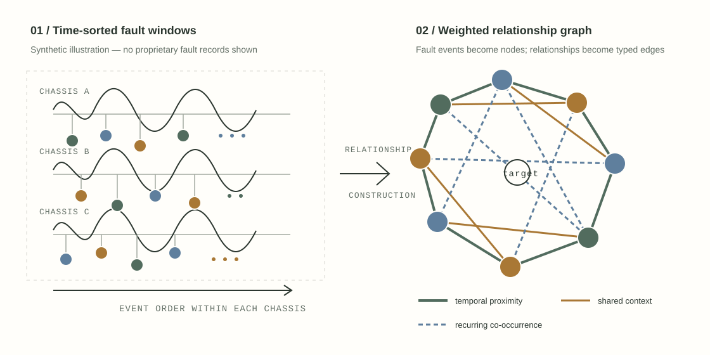

01
"Predict failure" was too vague. I rewrote the question.
- Problem
- "Predict failure" was too vague to evaluate against the available evidence.
- Action
- Defined maintenance-linked targets, graph representations, and vehicle-wise chronological validation.
- Result
- First-author ACML 2025 publication; high-cost precision improved from about 60% to 95%.
- Stack
- Python · PyTorch Geometric · scikit-learn · graph neural networks
Flagship research
From ambiguous inputs to a graph that could answer a decision. Published as Wu You in PMLR 304 / ACML 2025.